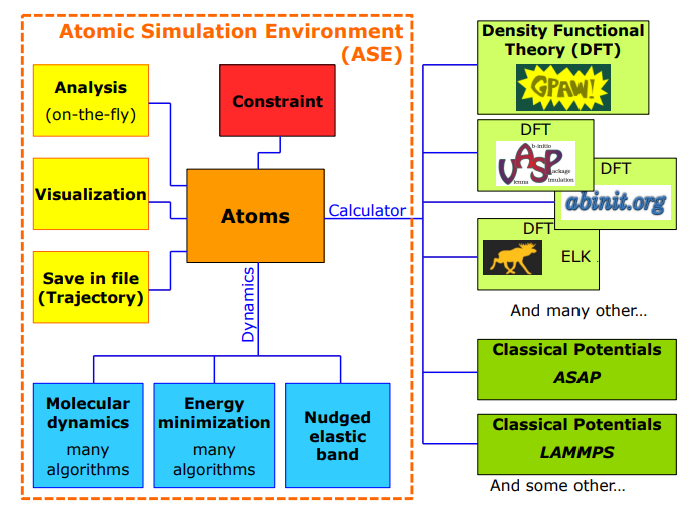

ASE workflow
Contents
ASE workflow#
Basic workflow#
ASE allows atomistic calculations to be scripted with different computational codes. To perform a calculation in ASE, we have to
Define an
ase.Atomsobject, which contains atomic positions and simulation cell (atom, molecule, bulk)Define a calculator and attach it to
ase.Atomsobject.The calculation is triggered when methods of
ase.Atomsis called. E.g.,atoms.get_forces(),…
The parameters for calculation are set in calculator. Each calculator has its parameters.

from ase import Atoms
from ase.calculators.emt import EMT
atoms = Atoms(...) # define Atoms object
calc = EMT(...) # define calculator
atoms.calc = calc # attach calculator to atoms obj
atoms.get_potential_energy() # strigger calculation
Define things#
All modules in ASE are available here
The Atoms object#
The Atoms object is the main simulation object. It contains: • Per-atom data: positions, velocities, charges, magnetic moments, tags. • Global data: Unit cell, boundary conditions. • Refs to helper objects: Calculator, constraints,…
See [Introduction](file:///C:/Users/thang/Downloads/Intro_projects_CAMD2022.pdf)
The Atoms object can be created in several ways
Build from scratch with
ase.AtomsUse predefined object in
ase.build:molecule, ‘bulk’, `surface’,…The
ase.latticemodule. The module contains functions for creating most common crystal structures with arbitrary orientation. The user can specify the desired Miller index along the three axes of the simulation, and the smallest periodic structure fulfilling this specification is created. Both bulk crystals and surfaces can be created.The
ase.clustermodule. Useful for creating nanoparticles and clusters.Read from data files, in other formats with
ase.io: .CIG, … that can get from open database, such as Crystallography Open Database, Material Project
The XYZ format does not have unit cell information in it, so you will have to figure out a way to provide it.
`atoms.center(vacuum=5)` in `ase` is a qick for that
Calculators#
For ASE, a calculator is a black box that can take atomic numbers and atomic positions from an Atoms object and calculate the energy and forces and sometimes also stresses.
All supported calculators can be divided into four groups:
Have their own ative or external ASE interfaces: GPAW, BigDFT, DeePMD-kit,…
Have Python wrappers in the ASE, but the actual FORTRAN/C/C++ codes are not part of ASE: LAMMPS, VASP, PLUMED…
Pure python implementations included in the ASE package: EMT, EAM, Lennard-Jones, Morse and HarmonicCalculator.
Calculators that wrap others
Write outputs for post processing#
See the ase.io module
When running multiple calculations, we often want to write them into a file. We can use the standard trajectory format to write multiple calculations (atoms and energy) like this:
from ase.io.trajectory import Trajectory
traj = Trajectory('mytrajectory.traj', 'w')
## Run series of can calculations
for i in range(5):
...
traj.write(atoms)
Visualize#
For visualization
ASE provide a Visualize module. Consider to install packages
nglviewmay require to visualize in jupyter.-
%conda install -c conda-forge nglview %pip install git+https://github.com/arose/nglview
More advanced visualize with nglview see here
from ase import Atoms, Atom
from ase.visualize import view
atoms = Atoms([Atom('C', [0., 0., 0.]),
Atom('O', [1.1, 0., 0.])],
cell=(2, 2, 2))
atoms.center()
# visualize
atoms.pbc = True # to view box
view(atoms, viewer='ngl')